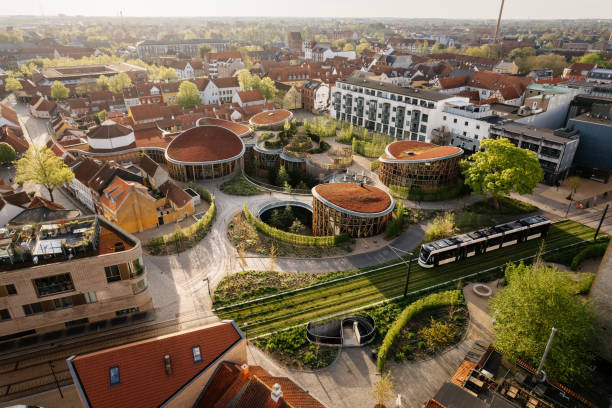

Localização
Odense, localizada na Europa, no continente europeu, no país da Dinamarca, mais precisamente na ilha de Funen (Fyn), da qual é a maior cidade. Fica a cerca de 167 quilómetros a sudoeste da capital, Copenhaga, e 144 quilómetros a sul de Aarhus. A cidade situa-se ao longo do rio Odense, que desagua no fiorde de Odense, num terreno predominantemente plano, típico do arquipélago dinamarquês, com uma área urbana de cerca de 80 km² e uma elevação de apenas 13 metros acima do nível do mar. É a terceira maior cidade da Dinamarca, com cerca de 182 mil habitantes na cidade propriamente dita. É conhecida como capital europeia da robótica, com forte foco em robótica de saúde e assistência médica (Odense Robotics). Muito segura, organizada e sub-explorada fora da Escandinávia.